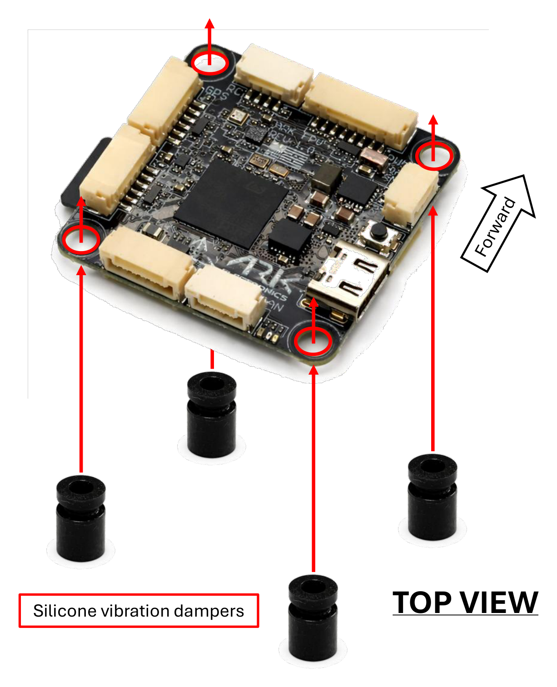
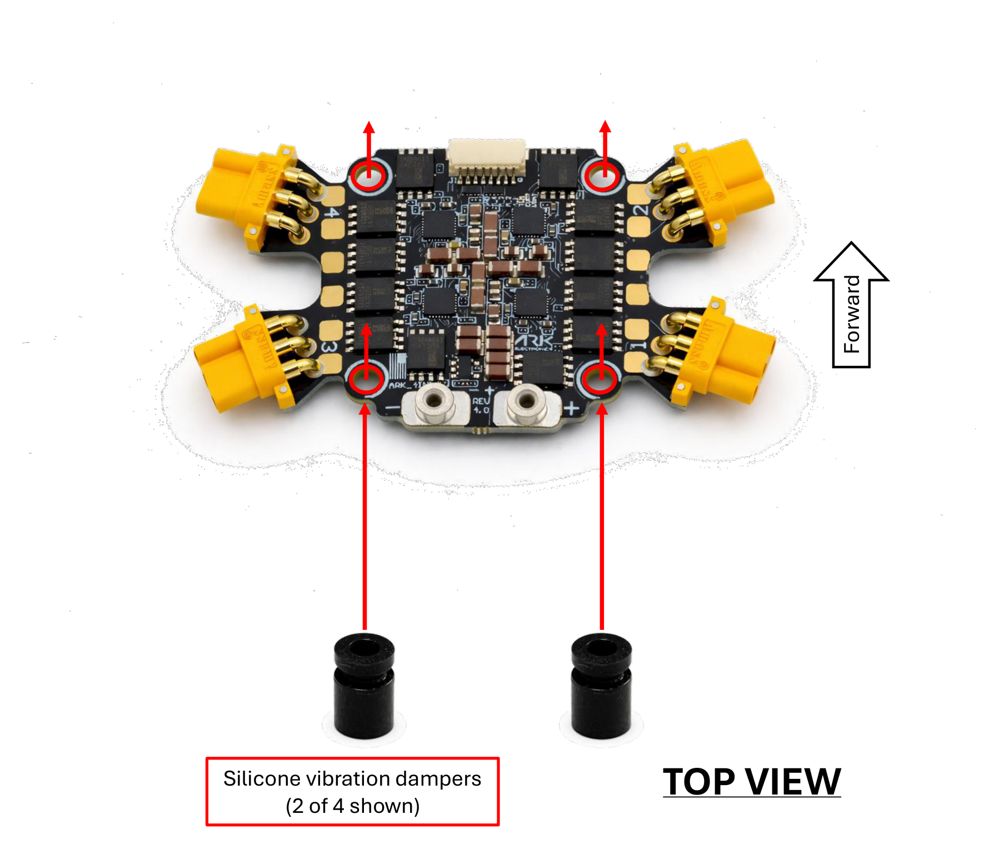
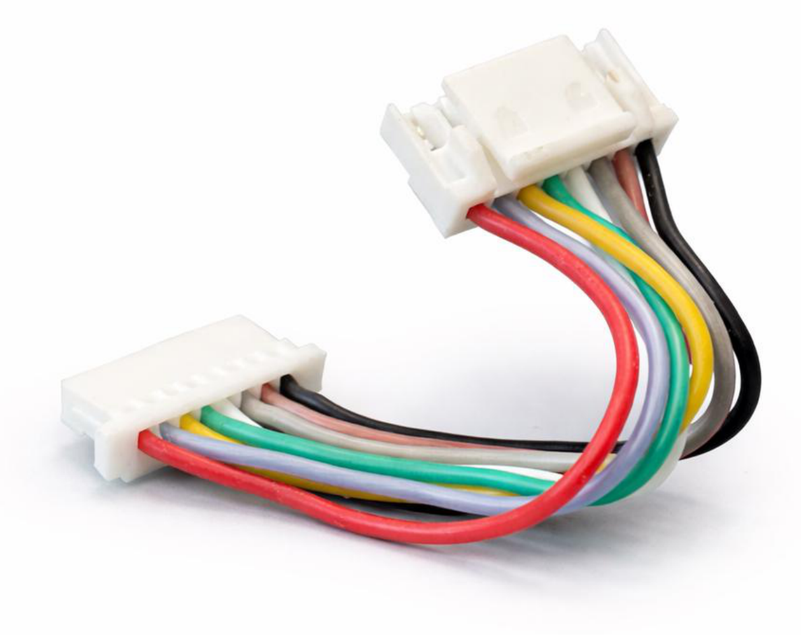
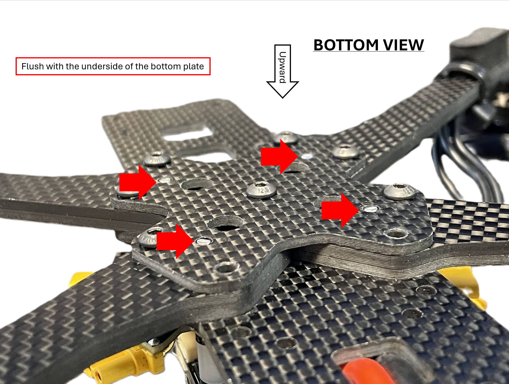
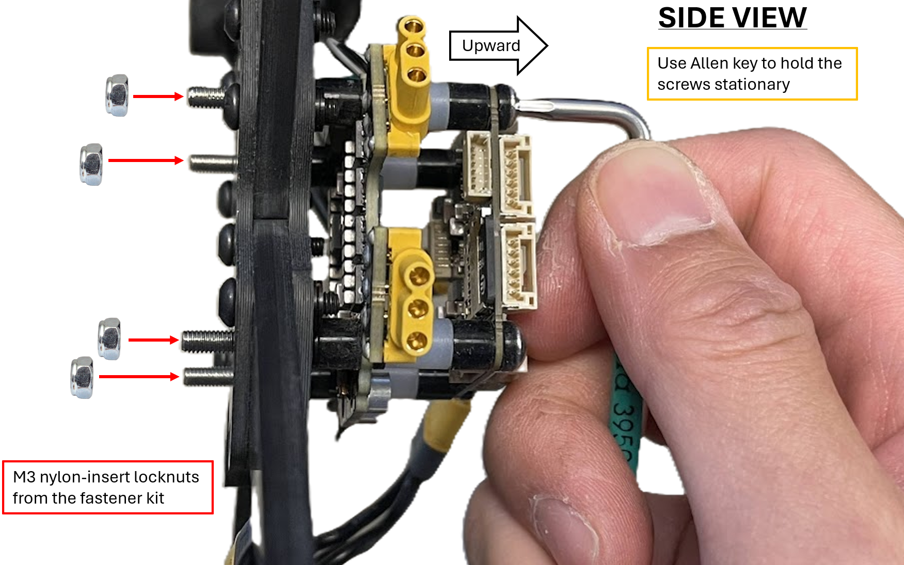

Task 6: Mount the FC/ESC stack
Connect the flight controller and electronic speed controller, assemble the separated FC/ESC stack, and secure it to the lower frame.
Parts required
- Lower frame from Task 4
- ESC package
- Electronic speed controller
- One 8-wire JST-GH/JST-SH ribbon cable that connects to the flight controller
- Four silicone rubber vibration dampers
- Flight controller package
- Flight controller
- Four silicone rubber vibration dampers
- Fastener kit
- FC/ESC Stack subkit
- Four M3 × 40 mm button-head hex-drive screws
- Four 8 mm nylon spacers
- Four M3 nylon-insert locknuts
- FC/ESC Stack subkit
Tools required
- 2.5 mm Allen key
- 5.5 mm nut driver
- Needle-nose pliers
Step 1. Prepare the flight controller and electronic speed controller
- Retrieve one ESC package and one flight controller package from the supplies shelf.
- Identify the top of each board. The flight-controller top is the side with the USB-C port. The ESC top is the side with the gold contact pads.
- Install four silicone rubber vibration dampers on the flight controller and four on the ESC, as shown in and .
- To install each damper, flatten it by hand, push the stem through the PCB mounting hole, and then gently pull the stem through with the needle-nose pliers.
Shared flight controller package.
Each bubble-wrap package contains two flight controllers and eight dampers. Take one flight controller and four dampers for your team. Split the package with another team. If no partner set is available, ask an instructor.
Each bubble-wrap package contains two flight controllers and eight dampers. Take one flight controller and four dampers for your team. Split the package with another team. If no partner set is available, ask an instructor.
Protect the dampers.
Do not pull directly on the narrow end. Excessive force can tear the rubber.
Do not pull directly on the narrow end. Excessive force can tear the rubber.

Dampers installed on the flight controller.

Dampers installed on the electronic speed controller.
Step 2. Connect the flight controller and electronic speed controller
- Retrieve the eight-wire FC/ESC ribbon cable from the ESC package.
- Identify the two connectors shown in . The JST-SH connector does not have a retention tab. The JST-GH connector does.
- Insert the JST-SH connector into the receptacle at the center of the ESC’s front edge. The visible metal contacts must face down toward the board.
- Insert the JST-GH connector into the receptacle on the right side of the flight controller’s front edge, as shown in .
- Verify that both connectors are fully seated.

Eight-wire FC/ESC ribbon cable. JST-SH connector on the left; JST-GH connector on the right.

Correct connector orientation when inserting the FC/ESC ribbon cable.
Step 3. Assemble the FC/ESC stack
- Orient the flight controller above the ESC as shown in .
- Place one 8 mm nylon spacer at each mounting point between the flight controller and ESC.
- Align all four spacers with the silicone rubber dampers on both boards.
- Insert one M3 × 40 mm screw through each mounting point, from top to bottom.
- Verify that the flight controller is above the spacers, the ESC is below the spacers, all four screws point downward, and the ribbon cable is clear of the screws and spacers.
EMI separation.
The four spacers establish an 8 mm gap between the flight controller and ESC to reduce electromagnetic interference from the high-current ESC.
The four spacers establish an 8 mm gap between the flight controller and ESC to reduce electromagnetic interference from the high-current ESC.

Completed FC/ESC stack before installation on the lower frame.
Step 4. Install the stack and set screw protrusion
- Position the completed FC/ESC stack over the lower deck as shown in .
- Align all four screws with the corresponding mounting holes.
- Turn each screw until its tip is flush with the underside of the bottom plate, as shown in .
- Confirm that all four screw tips are flush before continuing. This is the reference position for the 13-turn count.
- From the flush reference position, turn each screw clockwise exactly 13 complete turns.
- Verify that each screw protrudes exactly 6.5 mm below the bottom plate, as shown in .
Count each screw independently.
One complete turn is one 360-degree rotation. Do not begin counting until that screw is flush with the underside of the bottom plate.
One complete turn is one 360-degree rotation. Do not begin counting until that screw is flush with the underside of the bottom plate.
Correct FC/ESC stack orientation and mounting-hole alignment.

Flush reference position before the 13-turn count.

Required 6.5 mm screw protrusion after exactly 13 complete turns.
Step 5. Install the nylon-insert locknuts
- Place one M3 nylon-insert locknut on each protruding screw below the bottom plate.
- Hold the first screw stationary with the 2.5 mm Allen key, as shown in .
- While continuing to hold the screw stationary, tighten the locknut with the 5.5 mm nut driver.
- Repeat for the remaining three screws.
- Verify that all four locknuts are tight and that none of the screws rotated while its locknut was installed.
Turn the nut, not the screw.
The Allen key holds the screw stationary. Rotate only the 5.5 mm nut driver. Allowing the screw to rotate changes the calibrated 6.5 mm protrusion.
The Allen key holds the screw stationary. Rotate only the 5.5 mm nut driver. Allowing the screw to rotate changes the calibrated 6.5 mm protrusion.
End state.
All four locknuts are tight. The four 8 mm spacers remain between the flight controller and ESC. Both boards are aligned and flat, the ribbon cable is clear of the hardware, and none of the eight silicone rubber dampers is torn or crushed.
All four locknuts are tight. The four 8 mm spacers remain between the flight controller and ESC. Both boards are aligned and flat, the ribbon cable is clear of the hardware, and none of the eight silicone rubber dampers is torn or crushed.

Hold the screw stationary with the Allen key while tightening the locknut with the nut driver.
Common errors
- Installing a damper upside down or tearing it with the pliers.
- Mixing up the JST-SH and JST-GH ends of the FC/ESC ribbon cable.
- Inserting the JST-SH connector with its contacts facing away from the ESC.
- Omitting an 8 mm spacer or placing it anywhere other than between the flight controller and ESC.
- Pinching the ribbon cable between a spacer, circuit board, or screw.
- Using the former 30 mm frame-kit screws instead of the 40 mm screws from the FC/ESC Stack subkit.
- Beginning the 13-turn count before the screw tip is flush with the underside of the bottom plate.
- Counting partial rotations as complete turns.
- Allowing a screw to rotate while tightening its locknut.